Windows中安装JDK
原文作者：souvc 博文出处：http://www.cnblogs.com/liuhongfeng/p/4177568.html
本节内容：
以下是详细步骤
一、准备工具:
1.JDK
JDK 可以到官网下载
2.系统
我这里是WINDOWS7 64系统
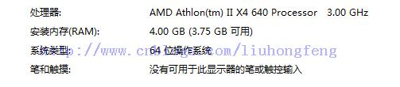
可以根据系统的版本下载相对应的JDK。
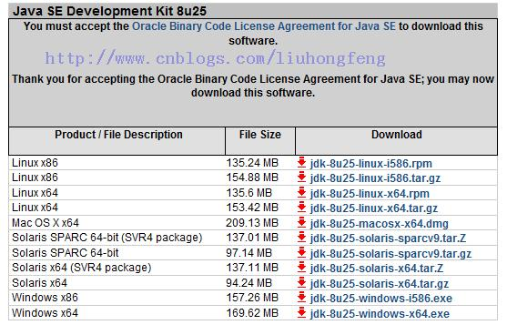
我这里选择：jdk-8u25-windows-x64.exe
注意区分：
Java SE Development Kit 8u25 Java SE Development Kit 8u25 Demos and Samples Downloads JavaFX Demos and Samples Downloads
第一个 java se开发包 第二个 java se开发包+示例 第三个 javaFX开发包和示例
第一个是必须的配置Java开发环境的
二、方法/步骤
1.安装JDK，JRE， 选择安装目录
安装过程中会出现两次 安装提示 。第一次是安装 jdk ，第二次是安装 jre 。建议两个都安装在同一个java文件夹中的不同文件夹中。（不能都安装在java文件夹的根目录下，jdk和jre安装在同一文件夹会出错）。
（1）双击jdk-8u25-windows-x64.exe 进行安装。
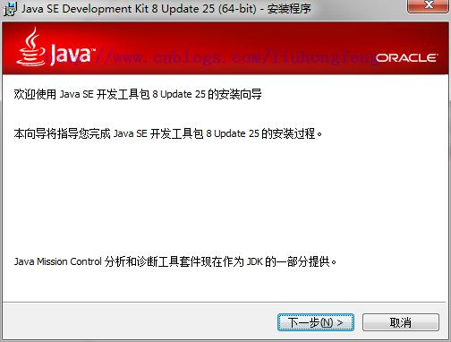
（2）点击“下一步”继续。
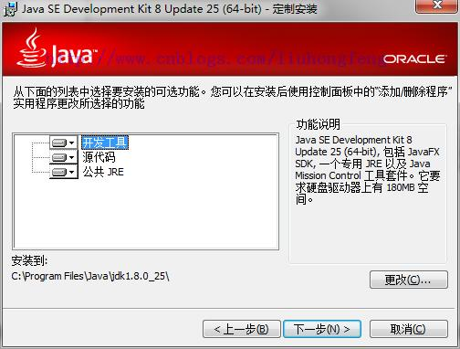
（3）选择安装路径，然后点击下一步。
默认是在C盘。我这里选择的是D盘。路径为：D:\Java\jdk1.8.0_25\
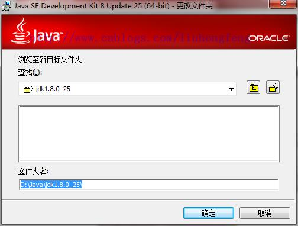
（4）等待安装结束之后。选择JRE安装的路径，点击下一步。
默认会选择C盘。
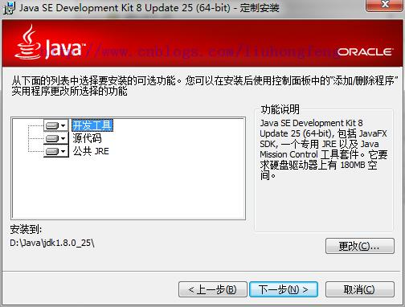
等待安装完成。
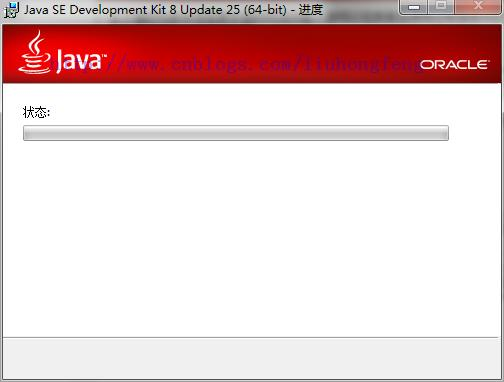
（5）JRE的安装
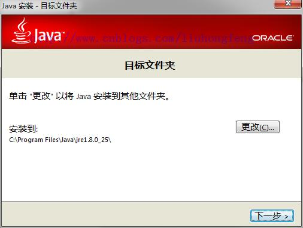
（6）我这里选择D盘。选择更改的时候，先在硬盘里面建一个文件夹。因为在选择的时候它不给新建。我这里是建了一个：jre1.8.0_25 文件夹。
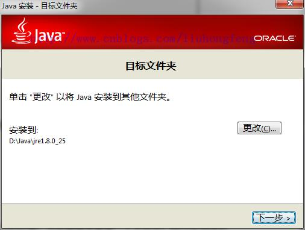
（7）安装完成，点击关闭。
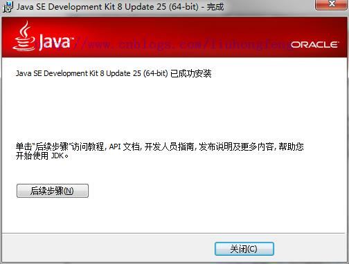
2.配置系统环境
配置环境变量：右击“我的电脑”-->"高级"-->"环境变量"。
（1）JAVA_HOME环境变量。 作用：它指向jdk的安装目录，Eclipse/NetBeans/Tomcat等软件就是通过搜索JAVA_HOME变量来找到并使用安装好的jdk。 配置方法：在系统变量里点击新建，变量名填写JAVA_HOME，变量值填写JDK的安装路径。（根据自己的安装路径填写）
JAVA_HOME：D:\Java\jdk1.8.0_25
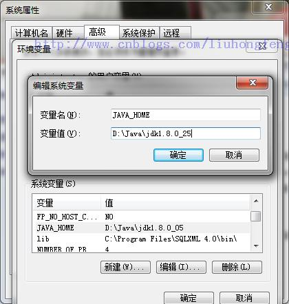
（2）CLASSPATH环境变量。
作用：是指定类搜索路径，要使用已经编写好的类，前提当然是能够找到它们了，JVM就是通过CLASSPTH来寻找类的。我们需要把jdk安装目录下的lib子目录中的dt.jar和tools.jar设置到CLASSPATH中，当然，当前目录“.”也必须加入到该变量中。 配置方法： 新建CLASSPATH变量，变量值为：.;%JAVA_HOME%\lib;%JAVA_HOME%\lib\tools.jar 。CLASSPATH变量名字，可以大写也可以小写。注意不要忘记前面的点和中间的分号。且要在英文输入的状态下的分号和逗号。
CLASSPATH ：.;%JAVA_HOME%\lib;%JAVA_HOME%\lib\dt.jar;%JAVA_HOME%\lib\tools.jar;
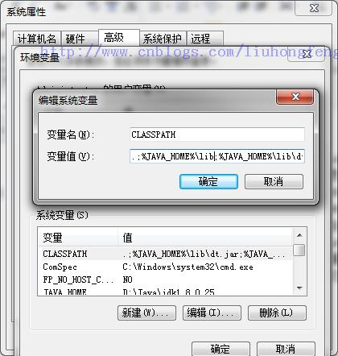
（3）path环境变量
作用：指定命令搜索路径，在i命令行下面执行命令如javac编译java程序时，它会到PATH变量所指定的路径中查找看是否能找到相应的命令程序。我们需要把jdk安装目录下的bin目录增加到现有的PATH变量中，bin目录中包含经常要用到的可执行文件如javac/java/javadoc等待，设置好PATH变量后，就可以在任何目录下执行javac/java等工具了。
在系统变量里找到Path变量，这是系统自带的，不用新建。双击Path，由于原来的变量值已经存在，故应在已有的变量后加上“;%JAVA_HOME%\bin;%JAVA_HOME%\jre\bin”。注意前面的分号。
Path：;%JAVA_HOME%\bin;%JAVA_HOME%\jre\bin
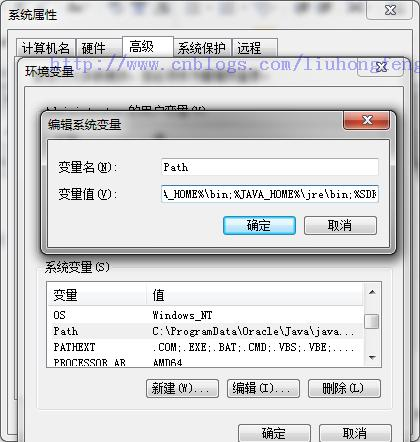
然后点击确定完成。
三、 测试环境。
检验是否配置成功 运行cmd 分别输入java，javac， java -version （java 和 -version 之间有空格）。
1.Java
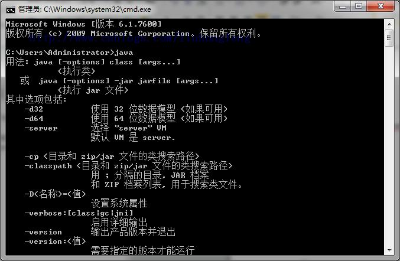
2.Javac
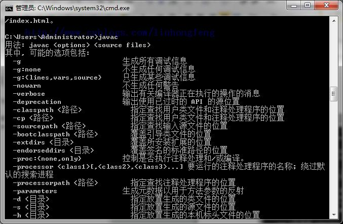
3.java –version
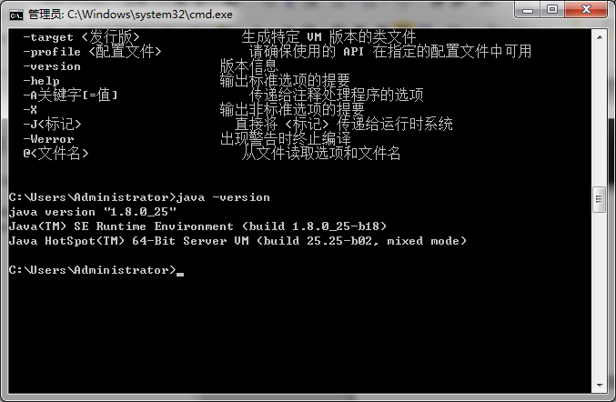
若如图所示 显示版本信息 则说明安装和配置成功。
也可以在命令行输入 echo %JAVA_HOME% 来查看当前的javahome路径。
小结： 环境变量： JAVA_HOME：D:\Java\jdk1.8.0_25 CLASSPATH ：.;%JAVA_HOME%\lib;%JAVA_HOME%\lib\dt.jar;%JAVA_HOME%\lib\tools.jar; Path：;%JAVA_HOME%\bin;%JAVA_HOME%\jre\bin
测试： Java，javac，java –version
注意：
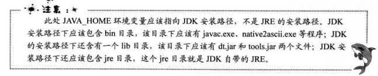
原文作者：souvc 博文出处：http://www.cnblogs.com/liuhongfeng/p/4177568.html
本文参与 腾讯云自媒体同步曝光计划，分享自作者个人站点/博客。
原始发表：2014-12-22 ，
如有侵权请联系 cloudcommunity@tencent.com 删除